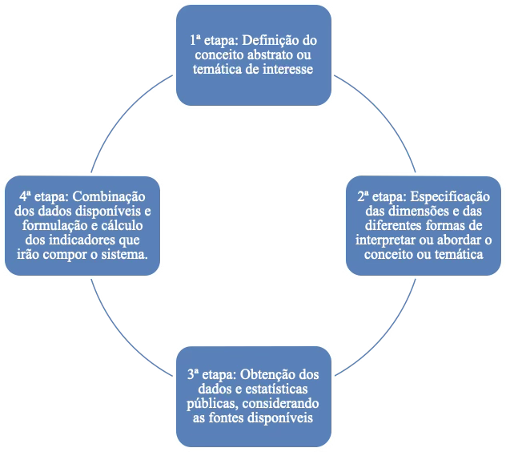
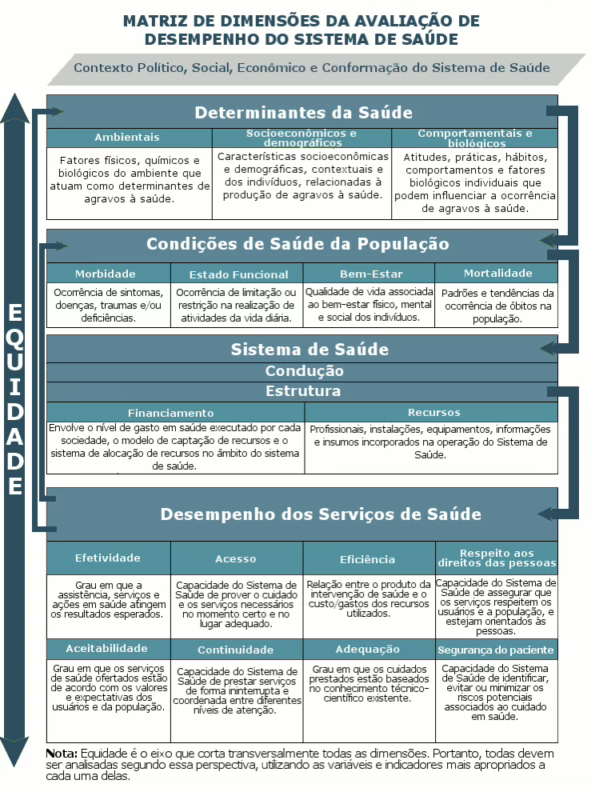
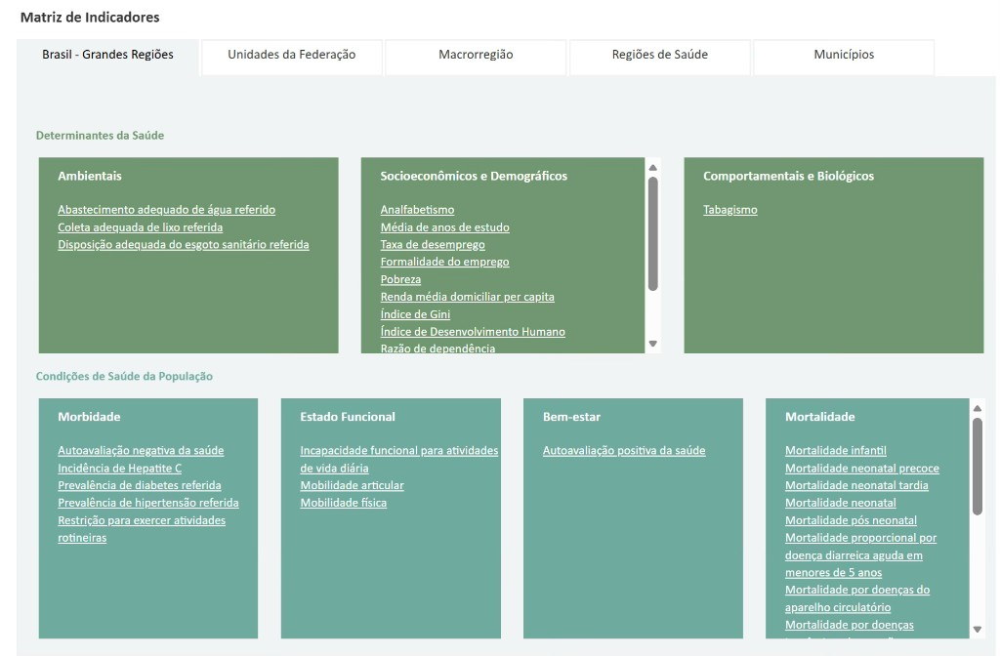
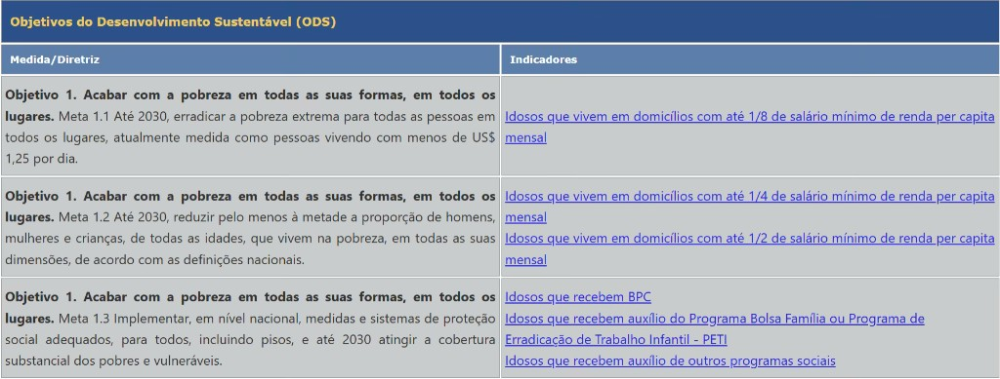
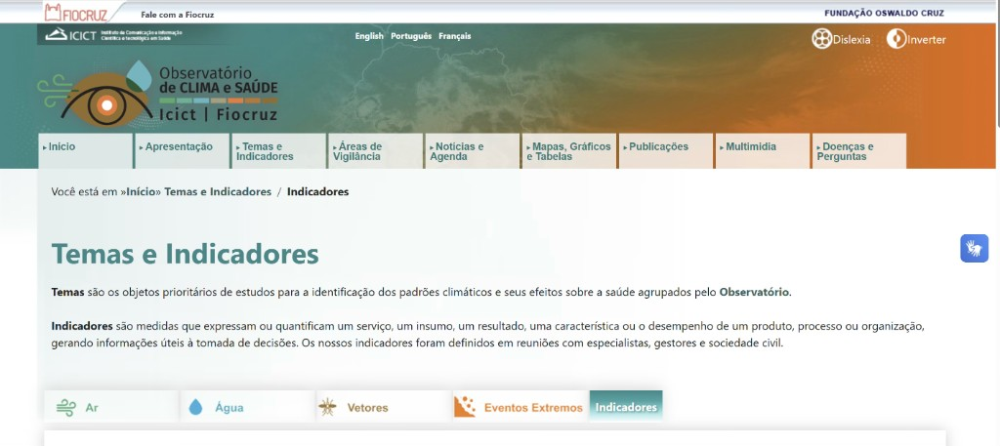

Módulo 3 | Aula 2
Painéis e sistemas de indicadores
Sistemas de indicadores
Além dos painéis, destacam-se os sistemas de indicadores como instrumento estratégico de organização, divulgação e análise de indicadores. Os sistemas de indicadores são iniciativas destinadas à análise articulada e integrada de diferentes temáticas, utilizando matrizes compostas por uma variedade de indicadores. Considerando que não é possível avaliar uma dimensão social a partir de única medida ou indicador, os conjuntos de indicadores propostos buscam contemplar a complexidade e multidimensionalidade dos fenômenos sociais.
Os sistemas de indicadores devem atender a um conjunto de atributos que garantam sua qualidade e utilidade. Para isso, é essencial que apresentem consistência interna, ou seja, que os indicadores selecionados sejam coerentes entre si e não produzam informações contraditórias. Quando o sistema possibilita comparações entre diferentes indicadores ou entre distintas desagregações geográficas, torna-se necessário padronizar ou ajustar os cálculos, assegurando a comparabilidade dos resultados. Também é fundamental considerar a disponibilidade e a periodicidade das fontes de dados utilizadas.
Por fim, um sistema de indicadores deve ser continuamente atualizado, acessível ao público que o utiliza, permitir a extração regular dos resultados e manter um nível adequado de confiabilidade.
Embora tanto os painéis quanto os sistemas de indicadores utilizem indicadores para apoiar a gestão em saúde, painéis de indicadores e sistemas de indicadores cumprem funções distintas. Os painéis de indicadores são conjuntos organizados de indicadores voltados ao monitoramento de uma intervenção, programa ou política específica, estruturados a partir da definição de objetivos, atividades, bases de dados e do cálculo dos indicadores correspondentes. Já os sistemas de indicadores têm um caráter mais amplo e integrado, permitindo uma análise multidimensional de diferentes temáticas, articulando diversas fontes e garantindo consistência interna, comparabilidade, acessibilidade e atualização contínua dos dados. Assim, enquanto os painéis se orientam por finalidades específicas, os sistemas buscam oferecer uma visão abrangente e estruturada da realidade analisada.
Etapas para a construção de um sistema de indicadores
Jannuzzi (2024) agrupa as etapas metodológicas da montagem de um sistema de indicadores em quatro, conforme a figura a seguir:
Figura 4 — Etapas da construção de um sistema de indicadores.

Fonte: Elaboração própria a partir de Jannuzzi (2024).
Um sistema de indicadores deve incluir o monitoramento da qualidade dos indicadores, revisão periódica da consistência da série histórica e disseminação oportuna e regular da informação.
Exemplos de sistemas de indicadores em saúde
Conheça a seguir alguns exemplos de sistemas de indicadores no campo da saúde pública desenvolvidos pelo Laboratório de Informação em Saúde do Instituto de Comunicação e Informação Científica e Tecnológica em Saúde da Fundação Oswaldo Cruz (LIS/Icict/Fiocruz).
I — Projeto de Avaliação do Desempenho do Sistema de Saúde (Proadess)
O Projeto de Avaliação do Desempenho do Sistema de Saúde (Proadess) teve início em 2003, e tem como objetivo contribuir para o monitoramento e avaliação do sistema de saúde brasileiro, ao produzir subsídios para o planejamento de políticas, programas e ações de saúde para gestores de todas as esferas administrativas e disseminar informações sobre o desempenho do SUS nos seus distintos âmbitos.
Na figura a seguir, é apresentada a matriz conceitual para avaliação do desempenho do sistema de saúde, composta por diferentes dimensões e subdimensões. A dimensão de desempenho dos serviços de saúde, por exemplo, é composta pelas subdimensões efetividade, acesso, eficiência, respeito aos direitos das pessoas, aceitabilidade, continuidade, adequação e segurança do paciente.
Figura 5 — Matriz conceitual para avaliação do desempenho do sistema de saúde.

Fonte: Proadess — Avaliação do Desempenho do Sistema de Saúde.
E como foi construído um sistema de indicadores a partir desse arcabouço conceitual? Para cada uma das diferentes dimensões de avaliação propostas, foi realizada uma revisão de indicadores propostos na literatura, e construídos novos indicadores, considerando as fontes de dados e sistemas de informação em saúde, tendo sido selecionados aqueles passíveis de cálculo, usando como principais critérios a validade e a viabilidade. Há um trabalho contínuo de atualização dos indicadores e elaboração de novos, considerando as mudanças que ocorrem na sociedade, nas políticas de saúde, e nos dados disponíveis nos sistemas de informação.
Assim, além da matriz conceitual, o projeto passou a apresentar também uma matriz de indicadores, com indicadores propostos para cada dimensão. Esses indicadores estão disponíveis para diferentes abrangências geográficas, e utilizam diferentes fontes de dados. No exemplo a seguir, temos os indicadores para as dimensões determinantes da saúde e condições de saúde da população.
Figura 6 — Matriz de indicadores para avaliação do desempenho do sistema de saúde.

Fonte: Proadess — Avaliação do Desempenho do Sistema de Saúde.
Explore o sistema em: https://proadess.icict.fiocruz.br/.
II — Sistema de Indicadores de Saúde e Acompanhamento de Políticas da Pessoa Idosa (SISAPI)
O SISAPI compreende um sistema de consulta de indicadores pela internet, a nível federal, estadual e municipal, sobre a saúde da pessoa idosa. Nesse sistema, os indicadores são distribuídos de acordo com duas matrizes conceituais: a matriz conceitual por dimensões de saúde e a matriz conceitual para o acompanhamento de políticas e programas.
A primeira matriz é fruto de uma adaptação da matriz do Proadess, apresentada anteriormente. Já a segunda foi elaborada a partir da revisão de políticas que tratassem diretamente da população idosa ou de agravos à saúde mais prevalentes nesse grupo etário, bem como fatores de risco associados. De acordo com as diretrizes e metas de cada política, foram definidos indicadores correspondentes, conforme exemplificado na figura a seguir:
Figura 7 — Matriz conceitual do SISAPI para acompanhamento dos Objetivos do Desenvolvimento Sustentável (ODS) e indicadores correspondentes.

Fonte: Sistema de Indicadores de Saúde e Acompanhamento de Políticas do Idoso (SISAP-Idoso).
Acesse o sistema em: https://sisap-idoso.icict.fiocruz.br/.
III — Observatório de Clima e Saúde
O Observatório de Clima e Saúde reúne e compartilha informações, tecnologias e conhecimentos para a avaliação dos impactos das mudanças ambientais e climáticas na saúde da população brasileira. O projeto realiza um inventário de dados ambientais, climáticos, socioeconômicos e de saúde disponibilizados por variadas fontes para contribuir com a compreensão da relação entre os processos de mudanças ambientais e climáticas globais e seus efeitos na saúde.
Os indicadores disponibilizados são agrupados em quatro temas prioritários: Ar, Água, Vetores e Eventos extremos. Também podem ser consultados de acordo com os seguintes tipos: ambientais, de clima, de saúde e socioeconômicos.
Figura 8 — Página de consulta a indicadores do Observatório de Clima e Saúde.

Visite o observatório: https://climaesaude.icict.fiocruz.br/indicadores.
Quantidade não é qualidade. Devemos ter parcimônia na seleção dos indicadores que irão compor os painéis e sistemas de indicadores e organizar as informações para diferentes usuários.